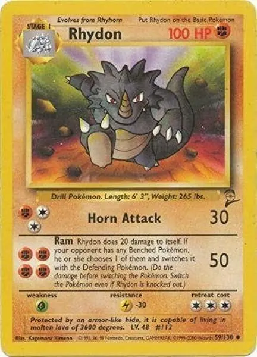

Diario de un Robot · 1 de noviembre de 2020November 1, 2020
Carta de amor al castellano
Hoy leo y estudio en inglés con más frecuencia que en castellano, casi no hay bibliografía disponible en mi idioma. Pero entonces, ¿por qué carta de amor al castellano? Porque veo esperanza.
This essay is only available in Spanish for now.

La primera vez que no entendí un escrito, después de haber aprendido a leer, fue la descripción de una carta Pokémon. La había intercambiado solo en base a su dibujo, un hermoso Rhydon, sin darme cuenta de que no podía leer lo que estaba debajo. Me acuerdo de ponerla en mi mazo; solo sabía que era la evolución de otra que tenía y que los números prometían una buena carta. Entendía por homología e imágenes, el texto era incomprensible. Recuerdo ir corriendo a mi papá y preguntarle “¿qué quiere decir esto?”, él me traducía directo al castellano. Cuantas más cartas intercambiaba, más letras aparecían ordenadas de forma insensata. Esta sensación se multiplicó el día que instalaron internet en casa.
Allá por el 2003 se abría frente a mí un portal a un mundo de lengua desconocida. Todo compartía una estructura y se replicaba en esa misma organización; todo resultaba ilegible. Reconocía la diferencia de idiomas. Había aprendido el francés en jardín de infantes y razonaba: a la mañana francés, a la tarde castellano, en los jueguitos esta cosa rara. Recién en cuarto grado arranqué otro idioma: me dijeron que se llamaba inglés. El aprendizaje por comparación no parecía dar frutos, terminé mi primer trimestre con cuatro notas en grande:
- Comprensión oral: D
- Comprensión escrita: D
- Expresión oral: D
- Expresión escrita: D
Cabe aclarar que detestaba a mi maestra. Mi mamá procuró conseguirme otra. Empezamos con mi hermano (que siempre ligó de acompañante) dos horas por semana. Ahí comenzó mi agónico abandono de la lengua materna, aunque todavía conservaba un lugar exclusivo.
Los libros eran terreno indiscutido del castellano. El león, la bruja y el ropero fue mi primera lectura solo (en 1.er grado). En simultáneo mi papá nos leía Harry Potter, recuerdo tener que esperar, sí, esperar la traducción. Fue ahí donde entendí que todos esos libros que yo leía no eran así de entrada, que los agarraba alguien, los leía mejor que nadie y nos los traducía. Era mágico. Ávido lector de fantasía y ciencia ficción, me la pasé leyendo traducciones.
Las cosas cambiaron cuando empecé mi vida en la internet. Parecía que todo el contenido era en inglés, por suerte ya había pasado mi trauma inicial con el idioma. Entré entonces esta vez de lleno: series, películas, libros, videojuegos y hasta subtítulos de animé; todo en inglés. No solo eso sino que entre mis amigos nos incentivábamos: “¿Cómo vas a jugar en español? ¿Cómo vas a ver con esos subtítulos? ¿Cómo hacés para bancarte esas traducciones?”. Poco a poco mi foco se desplazó, abrir una computadora era sinónimo de cambiar de idioma. Hasta Wikipedia se consultaba en inglés.
Como si fuese poco llegó una nueva herramienta, un acompañante que nadie se esperaba: el celular. Al principio pareció de lo más inocuo, poder hacer llamadas para avisar que llegué bien, mensajear con amigos (bastante escueto con sus precios) o descargar ringtones y audios. La revolución fueron los smartphones, desde el iPhone en adelante la mutación fue enorme: Reddit, Twitter, foros, Google, artículos, juegos y más, todo en un mismo lugar y todo en inglés. El último clavo en el cajón fue YouTube: contenido ilimitado sobre todos los temas, como siempre, in english. A partir del 2006 el contenido pasó a ser dominado por los angloparlantes.
Terminado el secundario y al entrar a la carrera nos advirtieron: “Aprendan inglés, no les va a quedar otra”. Soy de Ciencias Exactas y Naturales, todo trabajo científico está en inglés, muy pocos se traducen al castellano. Incluso los propios hispanohablantes escribimos directamente en la lingua franca. Hoy leo y estudio en inglés con más frecuencia que en castellano, casi no hay bibliografía disponible en mi idioma. Pero entonces, ¿por qué carta de amor al castellano? Porque veo esperanza.
Sí, el inglés es el idioma más hablado en el mundo (1.132 millones), pero el castellano es la segunda lengua con más hablantes nativos (460 millones) después del mandarín. El inglés vuelve a aparecer recién con 379 millones. Además, el español se encuentra en rápida expansión: hoy lo habla el 5,7 % de la población mundial, y se espera que llegue al 7,5 % en 2030. El Instituto Cervantes promete (con quizás algún sesgo) que será el idioma más hablado en el mundo; es la segunda lengua más enseñada después del inglés. Tiene un crecimiento acelerado dentro de EE. UU. (hoy quinto país con más hablantes nativos, más del 10 % de su población) y en la Unión Europea, más allá de las dificultades que supone. Es la segunda lengua más usada en redes sociales, pero acá no quiero hablar solo de números.
A mi entender, nos acercamos a una transformación importante. Nuestro idioma puede que haya sido relegado del internet durante mucho tiempo, pero la suerte está por cambiar. Las voces hispanas se multiplican a través de Twitter, Instagram y otras redes como TikTok, pero hay un gigante que estamos tomando: YouTube. El contenido en nuestra lengua está aumentando notablemente. Es hoy que canales como el de Jaime Altozano, Ter o Pascu y Rodri tienen un crecimiento enorme, todos cuentan con más de un millón de suscriptores. Por fuera de mi círculo, los canales gamers o de viajes sobrepasan fácilmente los 10 millones. ¿Qué está pasando entonces?, ¿dónde estaba esta gente antes?
Quizás alguna vez les haya pasado: están hablando con alguien en inglés (en vivo o en internet), la comunicación no fluye, el vocabulario es pobre, pero dicen una palabra que suena familiar. “¿Ah, hablás español?” y ahí dan el salto a la hispanidad para seguir la charla lo más bien. Bueno, ¿qué pasa si estamos haciendo eso constantemente? Puede que estemos hablando inglés entre hispanohablantes sin que se nos cruce por la cabeza iniciar la conversación en nuestra lengua materna. Sin embargo, cuando alguien se decide a crear contenido en nuestro idioma, nos encontramos e intercambiamos en castellano sin dudarlo. Tener a alguien de ejemplo, alguien a quien copiar, puede facilitar tanto la comunicación como la creación de contenido. Somos muchísimos, solo necesitamos una referencia.
Tenemos referentes en literatura, en música, pintura y cine. Incluso de a poco en animación y medios no convencionales. Al tener nortes en esas artes podíamos imaginarnos dentro. En internet nadie había reclamado el espacio, nadie se había posicionado en el mapa, andábamos sin brújula. Poco a poco se va formando un canon de internet. Todavía tenemos mucho por explorar.
En biología existe el concepto de “nicho ecológico”. El nicho es el perfil de especialización que encuentra una especie para desarrollarse. Cuando un nicho se encuentra vacío, rápidamente alguien lo ocupa. El internet en español es un nicho que no supimos explotar en todo su esplendor. Tenemos tantas posibilidades como los demás: desde explicaciones de política, pódcast, tutoriales de deporte o cocina, entre otros. Hoy somos tantos que estoy seguro de no haber mencionado ni a la mitad de quienes fueron relevantes en este camino. Toca encender la cámara, empezar a escribir o componer. El futuro es en nuestro idioma.
Tenemos también como novedad el nuevo banner e icono. Gracias a Fernan que hizo el diseño.
Además quería compartirles un link a un proyecto nuevo. Esta semana requirió de mucha cafeína y combatir demasiado estrés.
Nos vemos la semana que viene, que termines bien el día.
Fidel